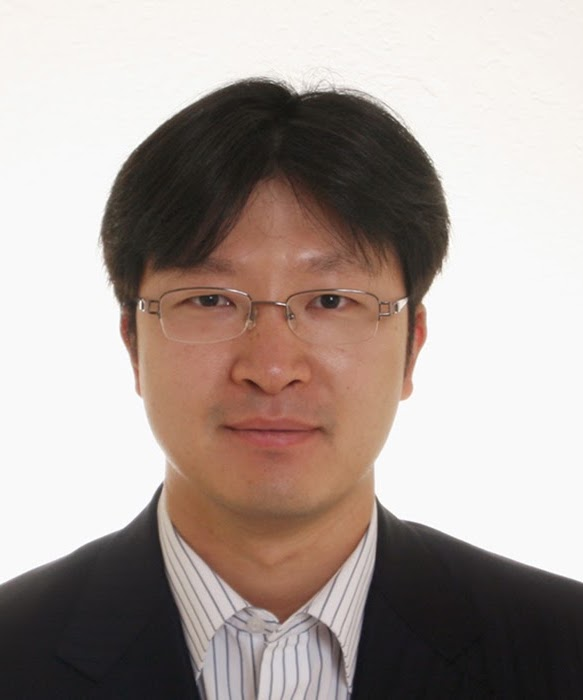

Professor
Leading innovation in medical imaging, AI, and clinical translation.

Professor
Jongduk Baek, Ph.D.
Professor & Chair
Department of Artificial Intelligence, Yonsei University
Professor Jongduk Baek leads the Translational Medical Intelligence (TMI) Lab, where research focuses on artificial intelligence for medical imaging, computational imaging, and image reconstruction. Our goal is to bridge cutting-edge AI research with real-world clinical applications and advance intelligent imaging technologies for precision healthcare.
Experience
- 2023.03 - : Professor and Chair, Department of Artificial Intelligence, Yonsei University
- 2023.03 - 2024.03 : Associate Dean of Planning, College of Computing, Yonsei University
- 2023.03 - : Affiliate Faculty, Department of Oral Maxillofacial Radiology, School of Dentistry, Yonsei University
- 2022.09 - 2023.02 : Associate Professor, Department of Artificial Intelligence, Yonsei University
- 2022.09 - : Affiliate Faculty, Department of Computer Science, Yonsei University
- 2022.08 - : Founder and CEO, BareuneX Imaging Inc.
- 2017.03 - 2022.08 : Associate Professor, School of Integrated Technology, Yonsei University
- 2022.03 - : Affiliate Faculty, Department of Radiology, School of Medicine, Yonsei University
- 2022.03 - : Affiliate Faculty, Department of Radiation Oncology, School of Medicine, Yonsei University
- 2018.08 - : Affiliate Faculty, POSTECH
- 2019.03 - 2020.02 : Visiting Professor at Stanford University, CA, United States
- 2017.01 - 2019.02 : Vice director of Yonsei Institute of Convergence Technology
- 2012.03 - 2017.02 : Assistant Professor, School of Integrated Technology, Yonsei University
- 2009.10 - 2011.12 : Postdoctoral Fellow, Dept of Radiology, Stanford University, CA, United States
- 2008.07 - 2008.08 : Consultant, GE Global Research Center, NY, United States
- 2004.09 - 2009.09 : Research Assistant, Lucas Medical Imaging Center, Stanford University, CA, United States
Education
- 2004.09 - 2009.09 : M.S./Ph.D. in Electrical Engineering, Stanford University, CA, United States
Thesis: Reconstruction aspects and noise properties in inverse geometry and volumetric CT
(Advisor: Norbert J. Pelc) - 1997.03 - 2004.02 : B.S. in Electrical Engineering and Management (minor), Yonsei University, Seoul, Republic of Korea
Graduated with highest honor (ranked 1/263)